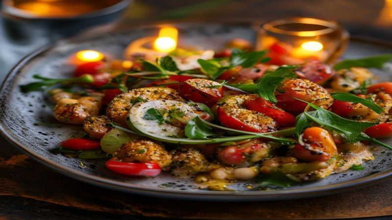

Mediterranean Chickpea Salad | Fresh & Protein-Packed
This vibrant Mediterranean Chickpea Salad is fresh, filling, and loaded with flavor! Protein-packed chickpeas, crunchy vegetables, feta, and a zesty lemon dressing. Perfect for meal prep!
Ingredients
- 2 cans (15 oz) chickpeas, drained and rinsed
- 1 English cucumber, diced
- 1 pint cherry tomatoes, halved
- 1/2 red onion, finely diced
- 1/2 cup Kalamata olives, halved
- 1/2 cup crumbled feta cheese
- 1/4 cup fresh parsley, chopped
- 3 tablespoons olive oil
- 2 tablespoons lemon juice
- 1 teaspoon dried oregano
- Salt and pepper to taste
Instructions
This Mediterranean Chickpea Salad is bright, refreshing, and incredibly satisfying. It's the kind of lunch that makes you feel amazing — and it only takes 15 minutes!
Drain and rinse the chickpeas. Pat them dry for the best texture. Add to a large mixing bowl.
Dice the cucumber, halve the cherry tomatoes, finely dice the red onion, and halve the olives. Add everything to the bowl with the chickpeas.
Make the dressing: whisk together olive oil, lemon juice, dried oregano, salt, and pepper until emulsified.
Pour the dressing over the salad and toss gently to combine. Add crumbled feta and fresh parsley on top.
Serve immediately or refrigerate — this salad gets even better after an hour as the flavors meld! Great in wraps, over greens, or with pita bread.
This salad is meal prep gold — it lasts 4-5 days in the fridge and the flavor only improves! Add grilled chicken for extra protein or serve it as a party side dish. So versatile!